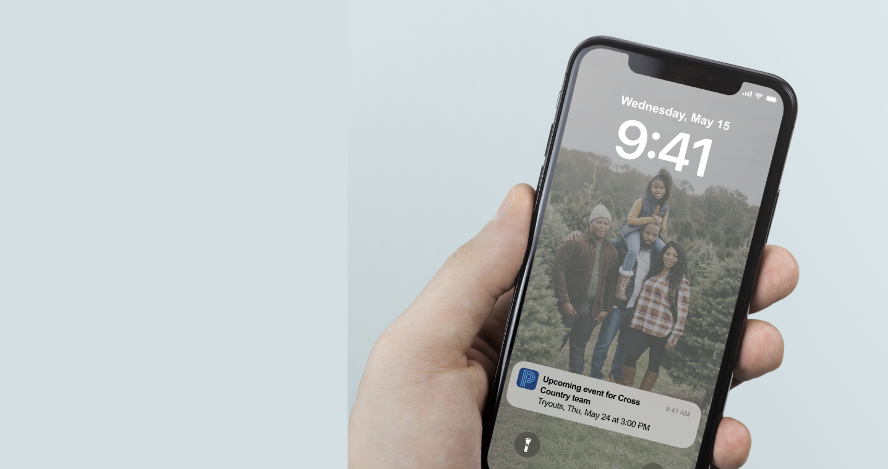
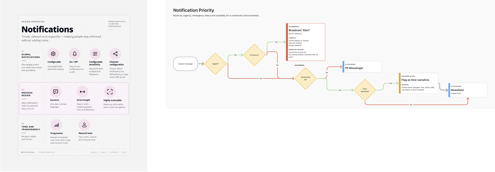
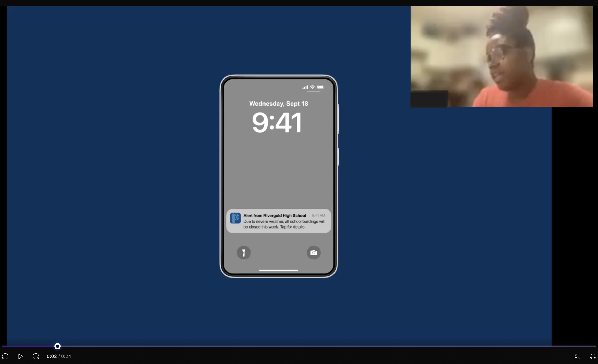
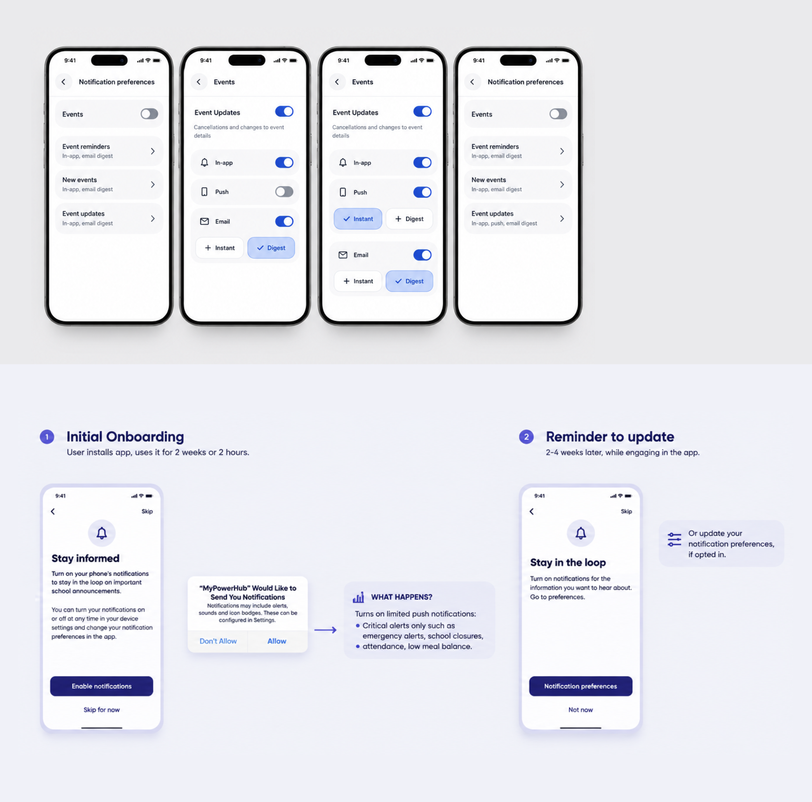
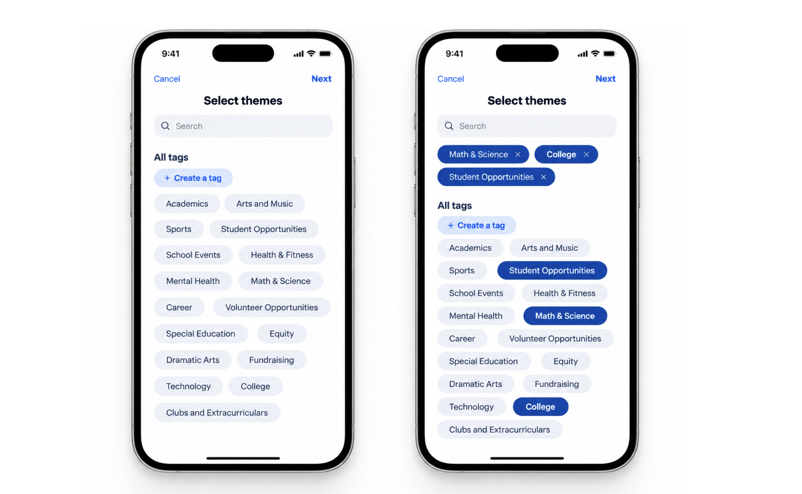

Case study
A data-informed communication ecosystem for K-12 families
Replacing a fragmented patchwork of notifications, email, and one-off messaging tools with a single, connected system — so the right information reaches the right person, in the way that works for them.
Role
Senior UX Designer, PowerSchool
Platform
Multi-channel (email, SMS, push, in-app)
Focus
Early-stage vision work, service design, UX research, prototyping, UX strategy & leadership, systems thinking, interaction design
Team
UX design (me), UX research, Product management, and engineering & design leads across the messaging, SIS, and mobile pillars
Tools
Figma, journey & service mapping, stakeholder workshops, card sorting
Summary
Led the vision and interaction strategy for an omnichannel communication ecosystem — notifications, preferences, messaging, and in-app alerts — connecting the flow of data, action, and engagement across educators, school/district staff, guardians, and students.

The problem and hypothesis
Problem
Family-facing communication was spread across a disjointed web of legacy channels — SIS, email, and point messaging tools — with no shared system of preferences, no centralization, and no way to act on what came through. The burden fell on already-stretched school admins, and the experience fell further behind family communication behaviors every year. The business was losing ground to a dominant, more unified competing platform.
Hypothesis
A connected ecosystem — bringing the right data at the right time, in the right channel, with a clear opportunity for action — would close that competitive gap and become the strategic foundation other product investments could build on.
The outcome
Business
MVP
Shipped, with adoption & retention metrics still being tracked (TBD)
User value
Increased engagement and access for families, with a personalized experience that respects each guardian’s preferences, access, and bandwidth.
The underlying framework and vision were validated through external strategy consulting as one of the business’s strongest long-term bets for platform investment — a position it has held even as leadership priorities and market conditions have continued to shift around it.
Ways of working: Strategy and leadership
No one else in the organization was approaching notifications, alerts, and messaging holistically — as one connected system rather than a set of disconnected product features. I set out to change that: defining experience principles and a vision for the space, then building the stakeholder alignment and service-design leadership to make it real.
- Vision & principles
- Defined experience principles and a point of view for notifications, alerts, messaging, and channels — presented in a dedicated stakeholder session and to the broader product organization.
- Design leadership
- Set the standard and the bar for a space no one was previously designing holistically, driving stakeholder alignment one-on-one and in group forums.
- Systems of implementation
- Built the ongoing system of review and iteration — including a shared notifications map and writing standards — to keep the experience coherent as new teams built on top of it.
- Navigating change
- Kept the vision anchored through real organizational change — new leadership priorities, a major strategic acquisition elsewhere in the business, and shifting market conditions — while continuing to make the case for it as a top investment.

Design strategy decisions
- Personalization as a competitive edge
- Identified distinct sub-personas with real, specific jobs to be done — not just “busy” versus “engaged” — and designed preferences around those nuances. This was a genuine edge over the market’s dominant competitor, which treated notification preferences as one-size-fits-all.
- Designing for access, not just preference
- Recognized that channel access isn’t universal — some guardians can’t use personal email or text messages at work — and designed graceful fallback across channels rather than assuming everyone can reach every modality.
- Gentle onboarding
- Built a deliberately gradual onboarding journey for notification preferences, with reminders to revisit settings over time — informed directly by adoption and retention research, not just a one-time setup screen.
- Richer data, deeper jobs to be done
- Connected communications to a deeper, more complete data set than the leading competitor offered, enabling a real system of action — not just one-way alerts — around tasks like excusing an absence or sending a note to a teacher.
Validating what belonged where was its own body of work: a value-mapping exercise, mental-model testing on where specific scenarios (school closures, alerts versus day-to-day messaging) should live, and a deliberate look at notification best practices across other industries, since there were no existing products in this space to benchmark directly against.

“I think its nice to be able to customize your communication preferences, so maybe if you want urgent alerts only and you dont really care about every notification…”
— Guardian
Key insights — what we learned about family personas
Persona and sub-persona discovery was foundational to the whole strategy — understanding not just who guardians are, but what they need from the system and when.
01
Busy & overwhelmed vs. involved & bored
Some guardians are stretched thin and want the absolute minimum signal — grades, attendance, nothing else. Others have more time and bandwidth and actively want more: photos, kudos, day-to-day color. Treating both groups the same meant failing one of them.
02
Access to modalities isn’t universal
Email and text are often forbidden or impractical during a guardian’s workday. A system that assumes everyone can be reached the same way, at the same time, quietly excludes the people with the least flexibility.
03
Signal versus noise is deeply personal
The system needed to be smart enough to surface what a guardian actually needs and wants — without burying it in what they don’t. For some, that meant digest-style delivery; for others, real-time was non-negotiable.
04
Photos matter, a lot
Across sub-personas, photo content consistently drove some of the strongest emotional engagement — a signal that shaped how we thought about content types across the system, not just text-based alerts.

Innovations explored
Beyond getting the fundamentals of notifications, preferences, email, and messaging right, we explored a set of forward-looking ideas to push the ecosystem further:
- Conversational preference onboarding
- A conversational, survey-style setup flow for notification preferences, designed to feel like a quick check-in rather than a settings form.
- News-on-the-go digest
- Explored an audio digest format for school and district news, for guardians who wanted to stay informed during a commute rather than at a screen.
- AI-assisted content for educators
- Prototyped generative assistance to help teachers draft family-facing communications faster, without losing their personal voice.
- In-app notification history
- A centralized, in-app history and alert center so guardians could revisit anything they’d received, instead of losing it to a push notification that had already disappeared.

I also led the interaction model and information architecture for the persona-based portals on the broader platform this work was built on, partnering closely with engineering and design leads cross-functionally.
Reflections and what’s next
What I learned
This was one of the richest learning experiences of my career — in how to influence through timing, storytelling, and format for different audiences; in running low-fidelity IA work, card sorts, and co-creation sessions; and in navigating organizational and political alignment alongside the design work itself.
What I’d do differently next time
Present strategy in a way that sticks — a dry, word-heavy research readout is hard to act on, even when the insight underneath it is strong. I’d invest earlier in a sharper narrative format for landing findings with stakeholders.
Push further into richer data and analytics earlier on, since that’s where the next layer of nuance for personalized action lives.